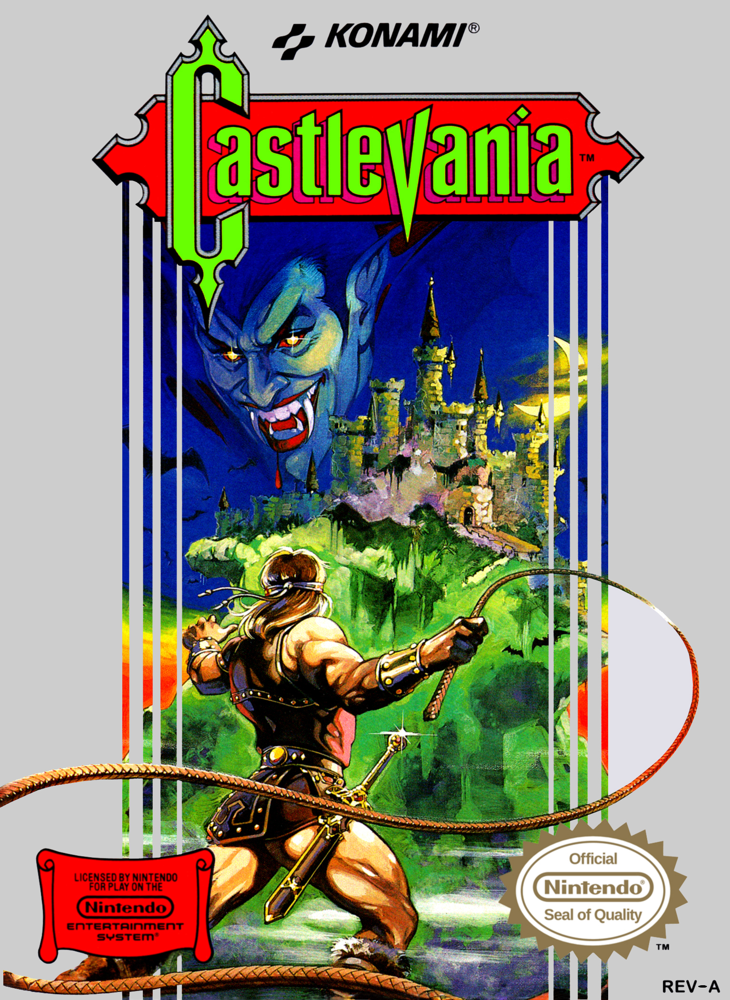

What is Speedrunning?
For those unaware, speedrunning is the term for completing a video game as fast as possible. This type of playing games isn't a new idea either, it's actually been around for over 20 years and is climbing in popularity. In the last ten years alone the interest in speedrunning has grown exponentially. If you were to search up any video game out there chances are the game has a community dedicated to beating it as fast as they possibly can. At any given time it is almost a guarantee that people are out there live-streaming themselves speedrunning for thousands of viewers in an attempt to beat some kind of record.
Now the question is: why should you care? Well, speedrunning is practically a sport with the way runners are able to absolutely dissect a game and figure out everything that happens frame by frame. It is a truly mesmerizing experience to watch an absolute expert on a game demonstrate their abilities in a competitive environment where they strive for the world's fastest time. Also, the community that surrounds speedrunning is utterly amazing with events like the annual Games Done Quick marathon that hosts countless runners and has brought in millions of dollars for charity. Speedrunning is a feat of excellence and really demonstrates what people are capable of when they work towards a goal, even if that goal is beating a game in a fraction of the time it would take the average player.
The above graph features data gathered from Google Trends and shows the worldwide interest in speedrunning from roughly the last 10 years. We can see that since 2012 public interest in speedrunning is only growing and it reached its peak at the start of this year after leaping up from the beginning of 2020. It's easy to see that speedrunning is only gaining momentum as time moves forward. The larger the audience that this activity reaches the more people try their hand at it further pushing speedrunning into the mainstream.
What is Castlevania?
Castlevania is a video game series from the Japanese company Konami. The series has had a variety of games featuring the Belmonts, a fierce family dedicated to the eradication of night creatures, and their sworn enemy Dracula. Along with some other characters the games usually center around a Belmont and their infiltration of Dracula's castle. The games are popular worldwide and beloved by many, however, the title I would like to focus on is the first in the franchise made for the NES aptly titled: Castlevania. This game has been massively popular and is responsible for launching the whole series. On top of that, it has been speedran by countless individuals trying to get the fastest time since 2004.